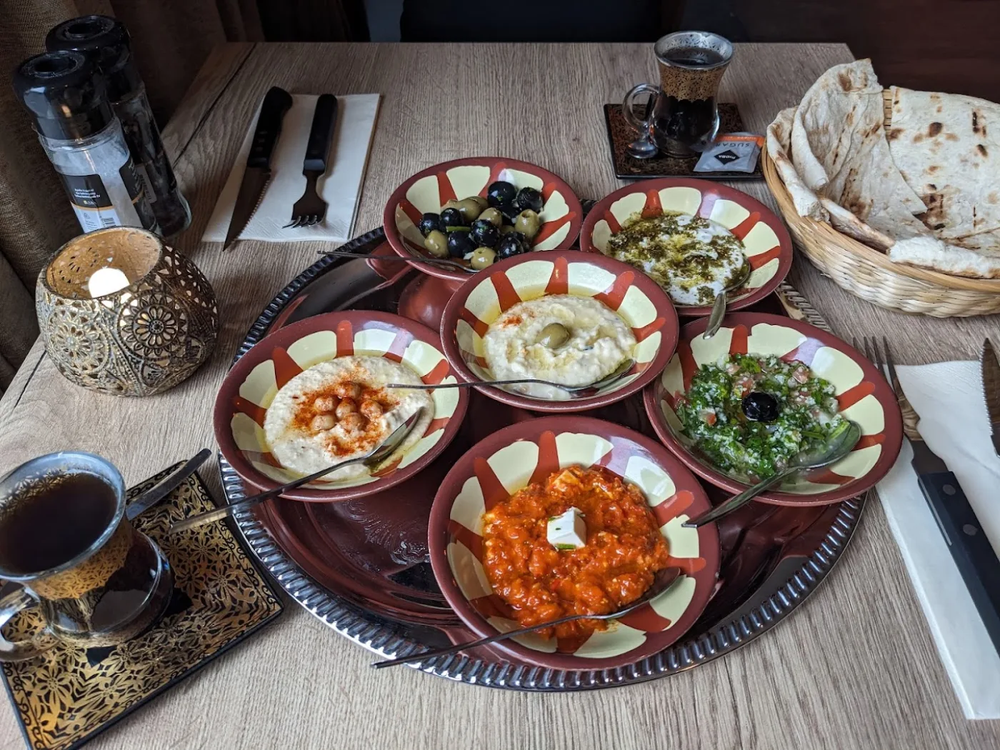

★★★★★
Ik heb verschillende voedselgevoeligheden en had veel vragen over de ingrediënten. Het personeel zocht alles voor mij op en liet zelfs de etiketten zien. We hebben allebei heerlijk gegeten en ik waardeerde de service enorm.
Jen TurnerGoogle-review